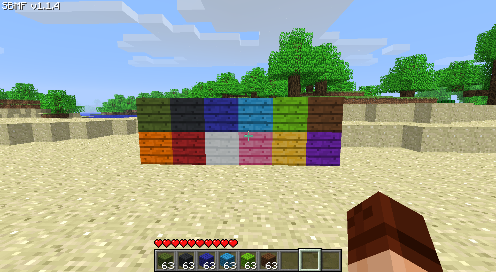
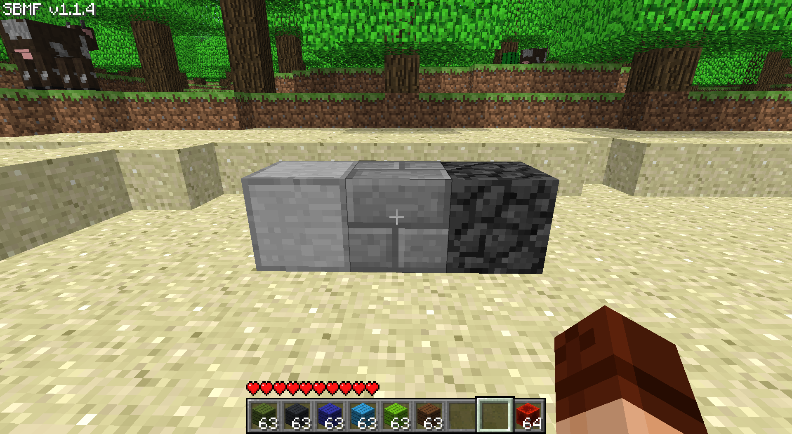
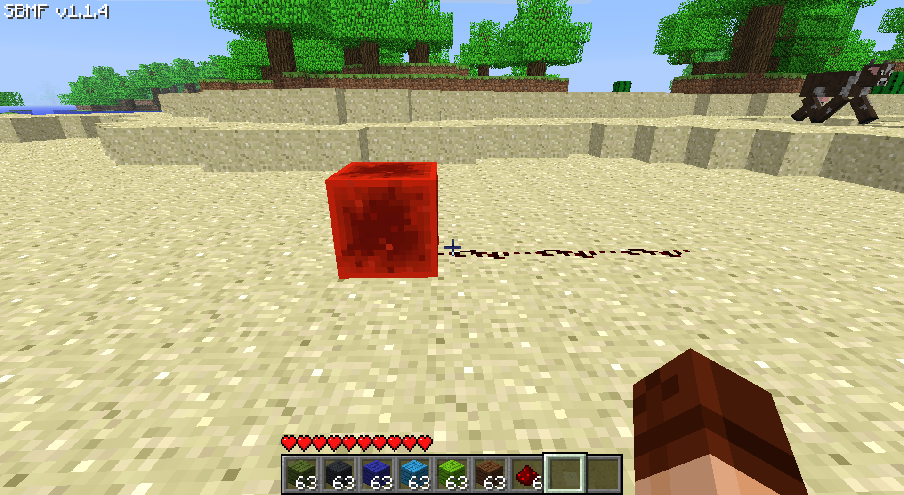
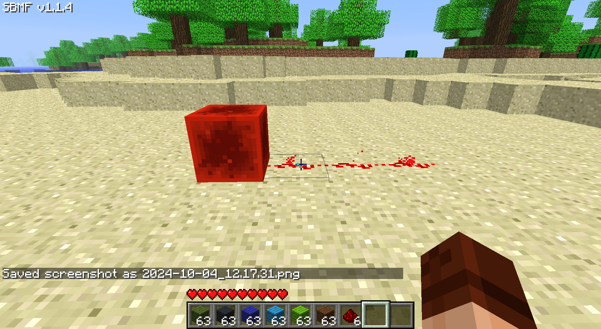
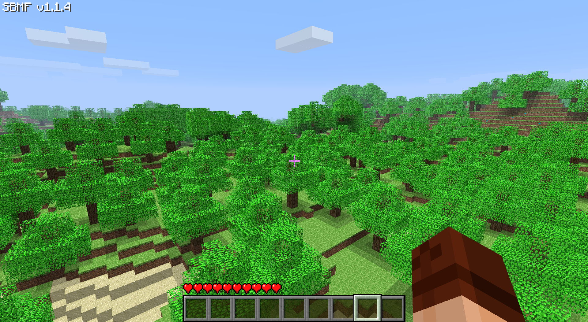
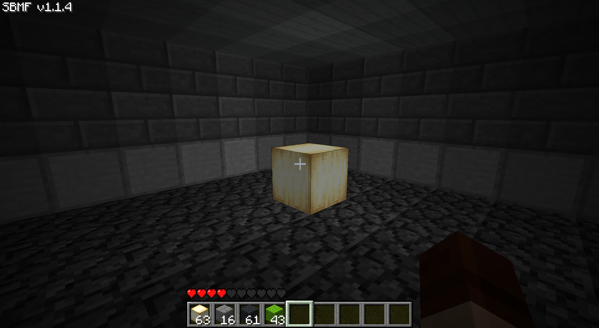
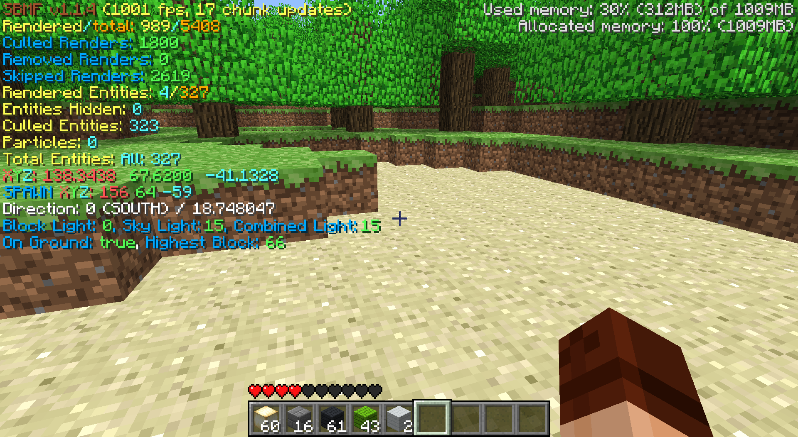
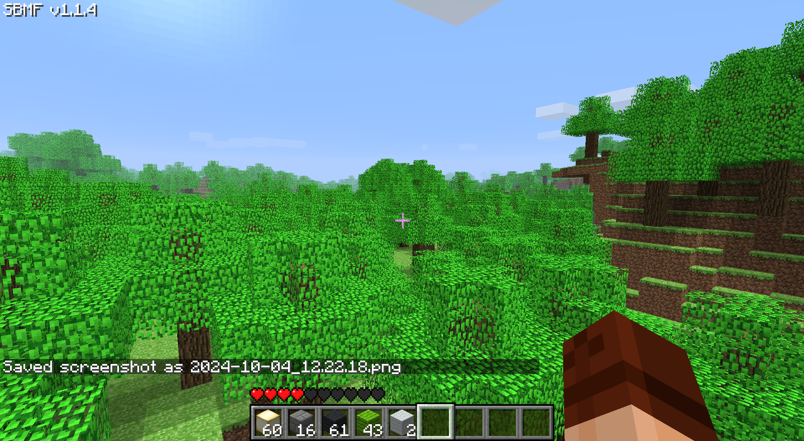

Svyatik Bak's site | Home | Download Windows | Blog | SBMF
Svyatik Bak's site | Home | Download Windows | Blog | SBMF
Changelog
It adds things like:
 Dyed planks
 New stone types
  Redstone block which acts like a big lever
 Increased tree density
 Torch block
 Improved debug screen and fixed leaf decay
 Added in-game screenshots
Here's one of my mods for Minecraft. SBMF